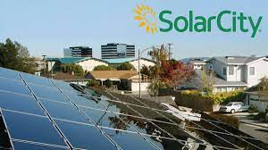

SolarCity
SolarCity Corporation es una empresa estadounidense subsidiaria de Tesla, Inc., especializada en energía solar. Provee servicios de energía a los propietarios de viviendas, empresas y organizaciones gubernamentales/sin ánimo de lucro. Entre sus principales servicios, la empresa diseña, financia e instala sistemas de energía solar (incluyendo el alquiler de placas solares2), realiza auditorías de eficiencia energética y modernizaciones y construcción de estaciones de carga para vehículos eléctricos, que utilizan electricidad renovable. La empresa contaba con más de 2.500 empleados a diciembre de 2012. SolarCity ha crecido en los últimos años para satisfacer la creciente instalación de sistemas de energía solar fotovoltaica en Estados Unidos. El Mercado de EE.UU. ha crecido de 440 MW de paneles solares instalados en 2009 a 6.200 megavatios en 2014.  El revolucionario fabricante de carros eléctricos estadounidense Elon Musk fundador de Tesla, acordó la adquisición de la empresa de energía solar norteamericana SolarCity, perfilando a Tesla como una ventanilla única de energía limpia. 2.600 millones de dólares invertirá Musk para cumplir parte de su “plan maestro: parte dos” en el que Tesla se convierte en una importante empresa proveedora de energía solar a bajo costo, combinando producción de fotovoltaica y almacenamiento. El objetivo de Tesla será que los tejados de los hogares tengan integrados los paneles solares para la generación de electricidad y que estos están conectados a baterías instaladas en los garajes que sirvan para, entre otras cosas, cargar sus coches eléctricos. “Energía solar y almacenamiento funcionan mejor cuando están combinados” Está fue una de las justificaciones que dio Tesla en su comunicado. Tesla y SolarCity como una única compañía, almacenamiento y energía solar “podrán ofrecer una solución integrada residencial o comercial que mejoren la forma en la que la energía es generada, almacenada y consumida” SolarCity es uno de los proveedores de energía solar más reconocido en Estados Unidos (tienen aproximadamente 25% del mercado de instalaciones solares domésticas en EEUU). Por su parte Tesla, es una compañía que diseña, fabrica y vende coches eléctricos, componentes para la propulsión de vehículos eléctricos y sistemas de almacenamiento a baterías.